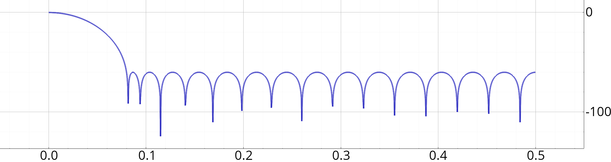

fenêtre_chebychev
Création d'une fenêtre de Chebychev.
Espace de nom : tsd::filtrage
Prototype
Vecf fenêtre_chebychev(entier n, float atten_db, bouléen symetrique=oui)
Paramètres
| n | Nombre de coefficients. |
| atten_db | Atténuation en dB sur la bande coupée. |
| symetrique | Si vrai, réalisation d'une fenêtre symétrique (adaptée pour la conception d'un filtre), sinon réalise une fenêtre périodique (adaptée pour l'analyse spectrale). |
Retourne
Vecteurs des coefficients de la fenêtre (vecteur de dimension n)
Description
La fenêtre de Chebychev a la propriété d'avoir une ondulation d'amplitude constante (voir exemple ci-dessous). Le design est aussi très pratique, car on choisi l'ordre (le nombre de coefficients), et l'atténuation souhaitée, et c'est la largeur du lobe principal qui sert de variable d'ajustement.
Exemple : création d'une fenêtre avec 60 dB d'atténuation
Temporel
Spectre